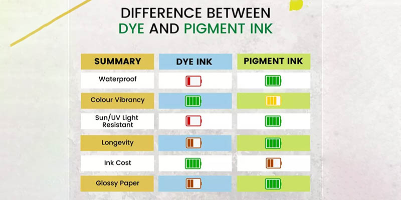

Pernah mengalami cetak warna luntur terkena air? Atau hasil print memudar setelah beberapa minggu? Itu mungkin karena menggunakan tinta dye biasa. Kini MedanPrint menggunakan teknologi tinta pigment yang menawarkan banyak keunggulan. Simak selengkapnya di artikel ini.
Apa Itu Tinta Pigment?
Tinta pigment adalah jenis tinta yang partikel warnanya menyatu dengan serat kertas dan membentuk lapisan tahan air. Berbeda dengan tinta dye yang bersifat larut air, tinta pigment lebih awet dan tidak mudah pudar.
Keunggulan Print Warna dengan Tinta Pigment
- Tahan Air: Dokumen tidak akan rusak jika terkena cipratan air.
- Tidak Mudah Luntur: Cocok untuk arsip jangka panjang.
- Warna Lebih Tajam: Hasil cetak lebih hidup dan detail.
- Anti Luntur Saat Disentuh: Tidak meninggalkan bekas di tangan.
- Cocok untuk Berbagai Media: Baik di kertas biasa, foto, maupun stiker.
Rekomendasi Penggunaan
Print warna tahan air sangat direkomendasikan untuk:
- Brosur dan pamflet yang mungkin terkena hujan atau tangan.
- Dokumen penting seperti sertifikat, ijazah, atau arsip.
- Foto dan poster yang ingin tahan lama.
- Skripsi yang memuat gambar atau grafik berwarna.
Perbandingan Tinta Dye vs Pigment
| Karakteristik | Tinta Dye | Tinta Pigment |
|---|---|---|
| Ketahanan Air | Rendah | Tinggi |
| Ketahanan Pudar | Cepat pudar | Tahan lama |
| Kecerahan Warna | Cerah | Tajam dan solid |
| Harga | Lebih murah | Sedikit lebih mahal |
Mengapa Memilih MedanPrint untuk Cetak Warna?
Di MedanPrint, kami menggunakan printer profesional dengan tinta pigment asli, sehingga hasil cetak warna Anda dijamin tajam, tahan air, dan awet. Kami juga melayani cetak dalam jumlah kecil maupun besar dengan harga bersahabat.
Dengan tinta pigment, hasil cetak warna Anda akan lebih awet dan profesional. MedanPrint siap melayani cetak warna tahan air untuk berbagai kebutuhan di Medan.